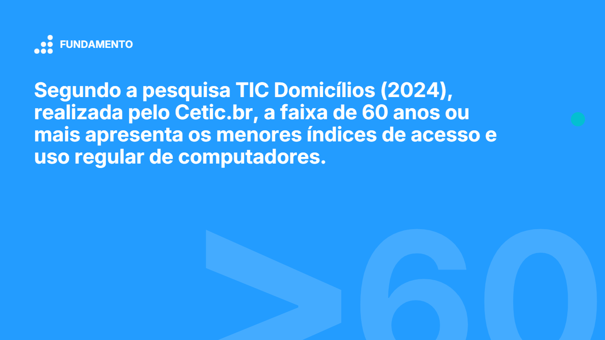
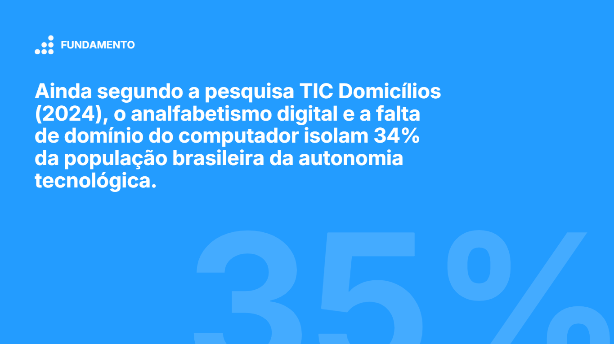
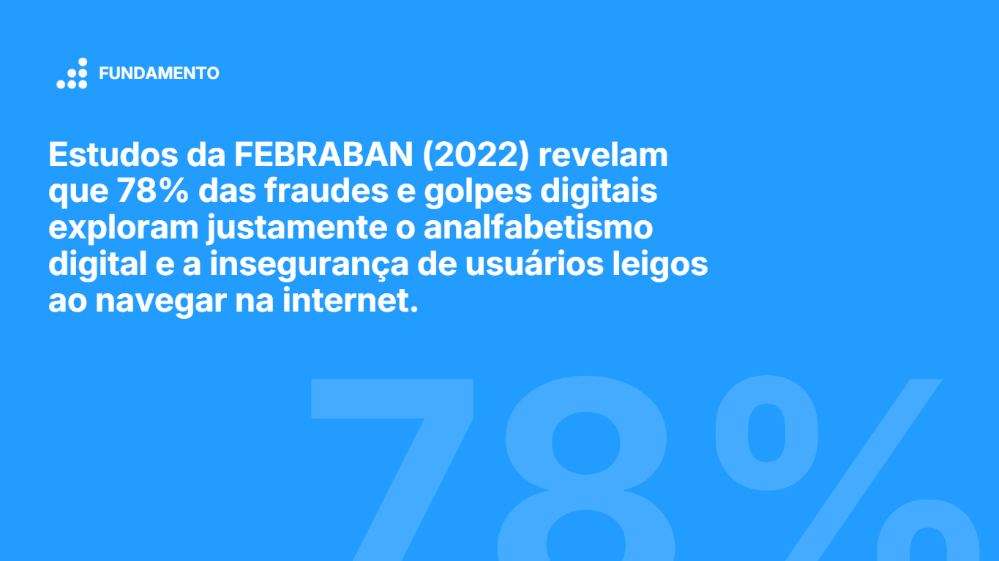
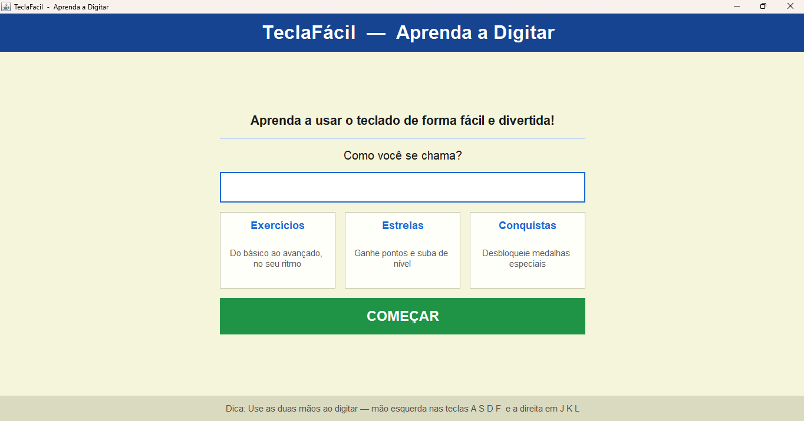
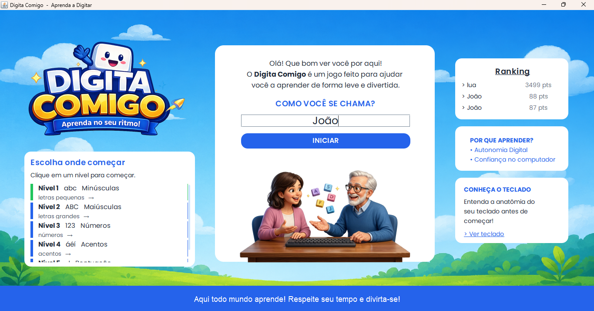
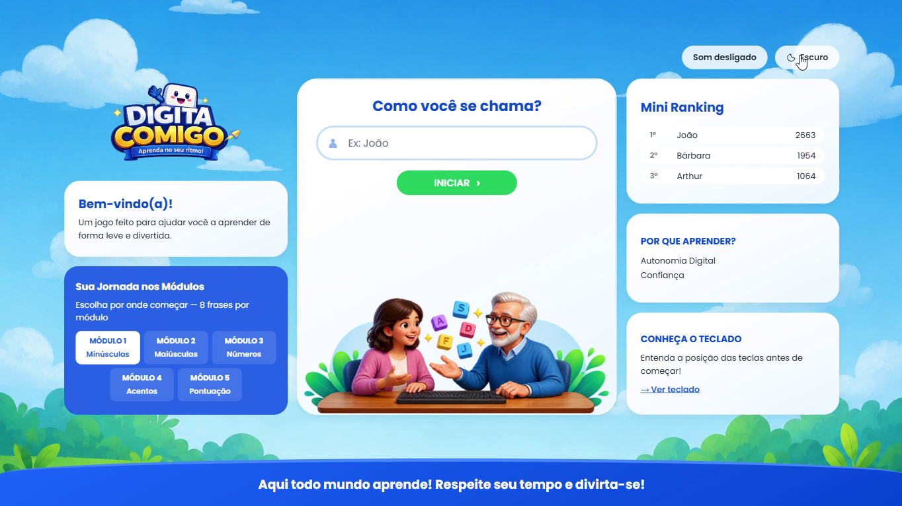
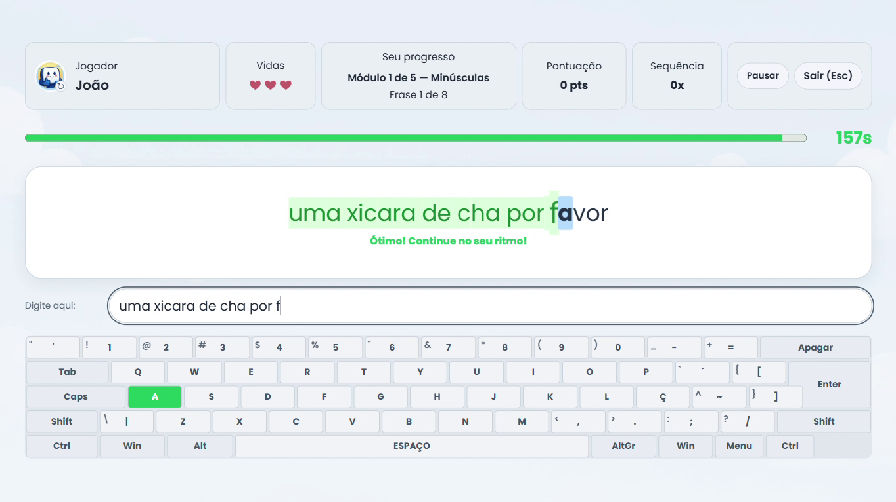
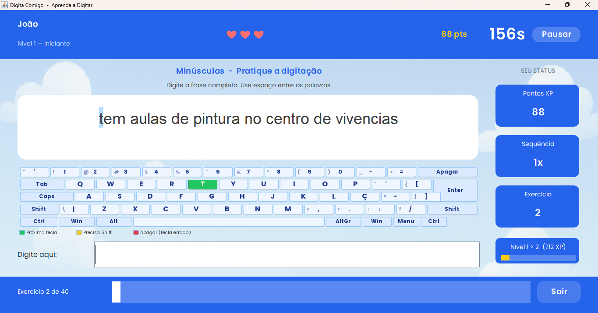
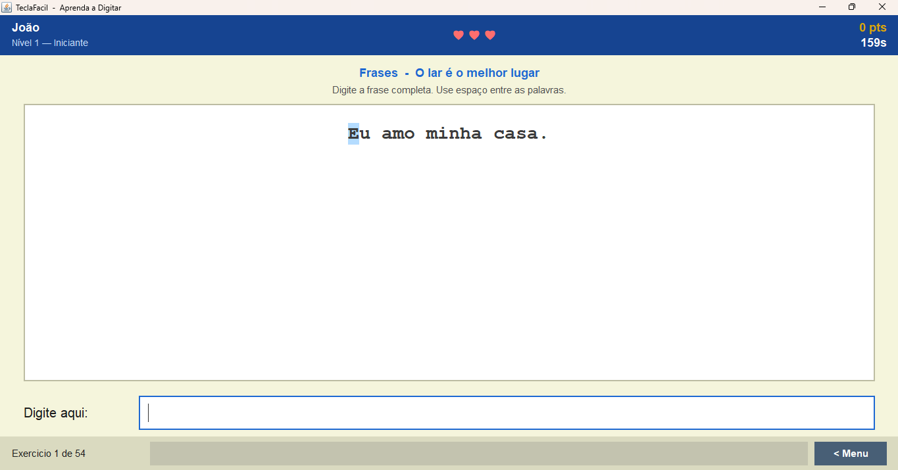

Projeto 015 · Projeto de Extensão III
Digita Comigo
Um jogo educativo de digitação que começou como aplicação desktop em Java Swing e evoluiu para uma experiência web. O projeto conecta prática de digitação a uma identidade visual criada para tornar o aprendizado mais acolhedor e acessível.
- Área
- UI Design
- Tipo
- Projeto de extensão universitária
- Meu papel
- Front-end, UI, testes de usabilidade e guia de marca
- Etapas
- Projeto de Extensão II e III
- Entrega
- Aplicação web demonstrada em vídeo
- Tecnologias
- HTML · CSS · JavaScript · Node.js (back-end da versão atual) · Java · Java Swing (versões anteriores)
Visão geral
Digita Comigo é um jogo educativo para praticar digitação. Desenvolvido como projeto de extensão da graduação, ele passou por diferentes entregas: da primeira versão nativa à aplicação web atual.
O que compõe a experiência
- Jogo de digitação com telas de entrada, painel de jogo e resultados.
- Interface própria apoiada em uma identidade visual para o projeto.
- Evolução gradual de uma aplicação desktop para uma experiência web.
Contexto e evolução
O projeto foi desenvolvido ao longo de dois momentos da disciplina Projeto de Extensão. A primeira etapa, Projeto de Extensão II, estabeleceu o jogo como uma aplicação nativa em Java e Java Swing. No Projeto de Extensão III, o trabalho avançou para uma aplicação web com HTML, CSS e JavaScript no front-end e Node.js no back-end.
Fundamentação teórica
O projeto parte do desafio da inclusão digital: ampliar o acesso e a autonomia no uso do computador e incentivar uma navegação mais segura. As imagens a seguir reúnem os dados de pesquisa que contextualizam esses problemas.



Uma interface em três momentos
A primeira versão nativa deu forma inicial ao jogo. Uma atualização posterior acrescentou uma identidade visual própria, ainda em Java Swing. A etapa atual leva a experiência para a web.



Identidade e interface
Na etapa atual, minha contribuição se concentrou no desenvolvimento front-end, na criação das telas da interface e em testes de usabilidade. Também desenvolvi o guia de marca, documentando propósito, cliente ideal e outros fundamentos da identidade do projeto.
Logo e cenários ilustrados da identidade visual, aplicados às telas inicial e de jogo.
Telas da aplicação web
As telas abaixo mostram a interface atual: entrada, painel de jogo e apresentação dos resultados.

Da versão nativa à identidade própria
Antes da migração para a web, uma entrega intermediária aproximou visualmente o jogo da experiência atual enquanto ele ainda rodava como aplicação Java Swing.

Primeira entrega nativa
A primeira versão já reunia as telas centrais do jogo, antes da atualização visual e da migração para a web.

Resultados e aprendizados
Uma experiência que acompanhou a evolução do projeto
A passagem do Java Swing para a web ampliou a forma de apresentar e acessar o jogo. As entregas registram a evolução da interface e da identidade, desde o protótipo nativo até a aplicação atual.
Meu escopo
- Desenvolvimento front-end da versão web.
- Desenho e implementação de telas de interface.
- Testes de usabilidade para observar a experiência de uso.
- Criação do guia de marca, incluindo propósito e cliente ideal.
Os materiais apresentados documentam as versões do projeto e a demonstração da aplicação web.